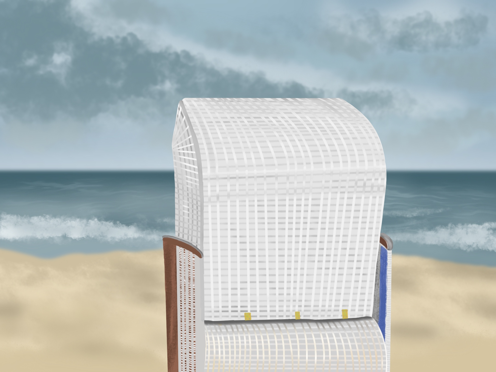

An meinen Zeichenkünsten arbeite ich schon sehr lange.
Anfangs natürlich mit Stift und Papier,
jedoch habe ich meine Leidenschaft neu entdeckt,
als ich mir ein iPad gekauft habe.
Seitdem zeichne ich mit der App Procreate.
Hier sind ein paar meiner Werke:

Aber das ist nicht mein einziges Hobby...
DLRG Konstanz
Seit ich 7 Jahre alt bin, bin ich in der DLRG.
Damals war ich noch in der Ortsgruppe Dettingen-Dingelsdorf,
die aber leider 5 Jahre später (2017), aufgelöst wurde.
Danach bin ich in die Ortsgruppe Konstanz gekommen
und habe mich dort relativ schnell eingelebt.
In der DLRG bin ich momentan Rettungsschwimmerin,
als auch Sanitätshelferin.
( DRSA Silber & SanA )
Allerdings habe ich auch vor, mich weiter
in diesen Bereichen fortzubilden.
In näherer Zukunft:
- Ausbildung zum Wasserretter (WRD)
- Ausbildung zum Sanitäter (SanB)
- Rettungschwimmabzeichen Gold (DRSA Gold)